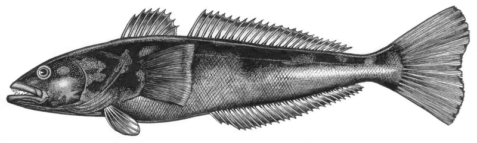
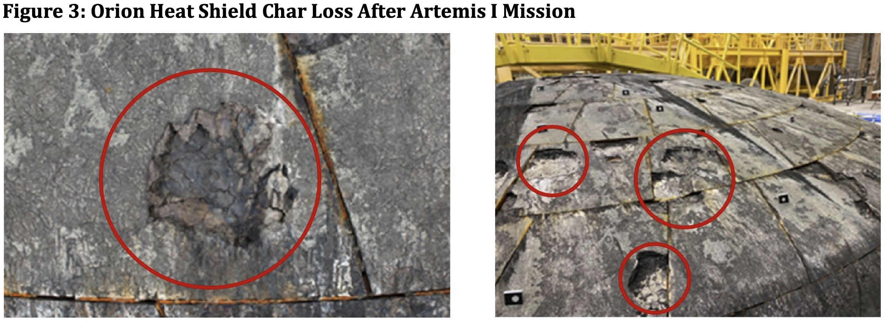
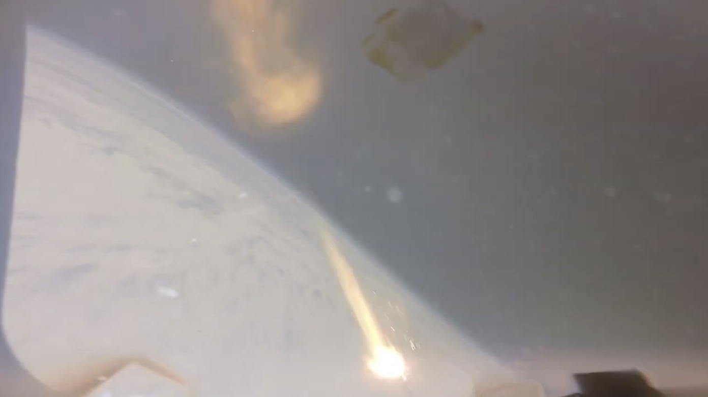

| « New Martian Writing |
“Our test facilities can’t reach the combination of heat flux, pressure, shear stresses, etc., that an actual reentering spacecraft does. We’re always having to wait for the flight test to get the final certification that our system is good to go.”—Jeremy VanderKam, deputy manager for Orion’s heat shield, speaking in 2022
On Wednesday, NASA will attempt to send four astronauts around the moon on a mission called Artemis II. This will be second flight of NASA’s SLS rocket, and the first time the 20-year-old Orion capsule flies with people on board.
The trouble is that the heat shield on Orion blows chunks. Not in some figurative, pejorative sense, but in the sense that when NASA flew this exact mission in 2022, large pieces of material blew out of Orion’s heat shield during re-entry, leaving divots. Large bolts embedded in the heat shield also partially eroded and melted through.
NASA’s initial instinct was to cover up the problem. In early press releases, they stressed that both rocket and spacecraft had performed exceptionally, while declining to publish the post-flight assessment review. The first mention of heat shield damage came from Orion program manager Howard Hu on a call with reporters in March of 2023. Hu said: “we observed there were more variations across the heat shield than we expected; some of the expected char material that we would expect coming back home ablated away differently than what our computer models and what our ground testing predicted.”
Asked by a journalist to quantify the char loss in a January 2024 phone call, Moon-to-Mars Deputy Administrator Amit Kshatriya said: “it was very small localized areas. Interestingly, it would be much easier for us to analyze if we had larger chunks and it was more defined”. A Lockheed Martin representative on the same call added that "there was a healthy margin remaining of that virgin Avcoat. So it wasn’t like there were large, large chunks.”
It wasn’t until May 2024, when the Office of the Inspector General released photographs of the heat shield, that the extent of the damage became clear. The problem wasn’t char loss or excessive ablation, but deep gouges and holes in many of the Avcoat blocks that comprise the heat shield.

The Avcoat material is not designed to come out in chunks. It is supposed to char and flake off smoothly, maintaining the overall contours of the heat shield. But Orion is a fat and heavy spacecraft, about twice as heavy as the Apollo command module it is modeled after. And the Avcoat heat shield is an experimental design. No one has flown a segmented heat shield like this at lunar return speeds, let alone on a spacecraft this heavy.
The substance of the OIG report was as alarming as the pictures. The OIG identified three issues that could potentially kill the crew on Artemis II:
- Heat shield spalling. This is the technical term for all those divots. Since spalling leaves voids and gaps in the heat shield material, it can expose the unprotected body of the capsule and lead to burnthrough. Spalling also changes the pattern of hypersonic airflow around the capsule, creating the potential for localized hot spots and cascading effects.
- Impact from heat shield fragments. When spalling sends pieces of heat shield into the hypersonic airstream, they can strike the top of the capsule, damaging the parachute compartment. Whether this happened on Artemis I is unknown. As the OIG report pointed out with some frustration, NASA failed to recover either the parachutes or the parachute cover, despite making elaborate plans to do so. Any evidence of debris impact is now at the bottom of the Pacific Ocean.
- Bolt erosion. The OIG report noted erosion and melting in four large separation bolts that sit embedded in the heat shield. These bolts are packed with a heat-resistant material and are supposed to be rugged enough to survive re-entry. But three of the four bolts had melted through, due to a flaw in the heating model NASA had used in designing them. The report further noted: ”separation bolt melt beyond the thermal barrier during reentry can expose the vehicle to hot gas ingestion behind the heat shield, exceeding Orion’s structural limits and resulting in the breakup of the vehicle and loss of crew.”
This left NASA in a quandary. The Orion capsule for Artemis II was already mated to its service module. Taking it off to make changes to the heat shield, even if the agency knew what changes to make, would take years. Nor was there room in the schedule to conduct a flight test, or any spare hardware to conduct the flight test with. Each Orion costs north of a billion dollars, and the only rocket it can launch on (SLS) costs two to four billion dollars a shot, depending on how you do the accounting.
Here it’s worth quoting Admiral Harlold Gehman, who chaired the Columbia Accident Investigation board, on what happens organizationally when a rigid schedule meets an immovable budget:
If a program manager is faced with problems and shortfalls and challenges, if the schedule cannot be extended, he either needs money, or he needs to cut into margin. There were no other options, so guess what the people at NASA did? They started to cut into margins. No one directed them to do this. No one told them to do this. The organization did it, because the individuals in the organization thought they were defending the organization. They thought they were doing what the organization wanted them to do.
And so NASA looked for ways to talk itself into believing it was safe to fly a defective heat shield.
In April 2024, the agency convened an independent review panel. The findings of that panel were not made public, but in December NASA announced that it had found a root cause for the heat shield damage. The Avcoat on the Artemis I heat shield was not sufficiently permeable, and so gas trapped under layers of the material had expanded and blow pieces out of the heat shield. The process had been exacerbated by the re-entry trajectory, which had heating occur in two distinct phases.
This was an awkward finding, since the heat shield NASA would use on Artemis II was made even less permeable, to make it easier to do ultrasonic testing. But you fly with the heat shield you have, and the agency said it was confident that a change to the re-entry trajectory would be more than adequate to offset any spalling issues.
Somewhat confusingly, they also announced their intention to switch to a new heat shield design, starting with Artemis III. In other words, the Artemis II shield was completely safe to fly, but they were never going to fly it after this mission, and the replacement design would be tested for the first time on a future lunar mission, with astronauts on board.
All of this was kind of preposterous. As the YouTuber Eager Space has pointed out, if a commercial crew capsule (SpaceX Dragon or Boeing Starliner) returned to Earth with the kind of damage seen on Orion, NASA would insist on a redesign and an unmanned test flight to validate it. But the agency does not hold its flagship program to the high standard it demands from commercial crew, even though the same astronaut lives are at stake.
Nor was it lost on observers that the tools and models NASA used to arrive at its new analysis were the same ones that had failed to predict the spalling problem in the first place. While the agency was able to work backwards from flight data to induce flaking in a test coupon of Avcoat, they had no way of predicting how the full-size heat shield would behave in the new flight conditions it would experience on Artemis II.
You don’t have to be a random space blogger to find all this fishy. The most energetic voice of public dissent has been heat shield expert and Shuttle astronaut Charles Camarda, the former Director of Engineering at Johnson Space Center. Aghast at what he saw as a repeat of the motivated reasoning that had led to the loss of Columbia and Challenger, Camarda began making noise both inside and outside the agency, believing that astronauts' lives were at stake.
In a show of openness, NASA invited Camarda and two journalists to attend a briefing on the heat shield in January of 2026, and gave him limited access to some research materials that have not been made public. But the experience only deepened Camarda’s distress, and he ended up publishing a cri de coeur that I encourage everyone to read in full.
In a nutshell, Camarda argues that NASA is demonstrating the same dysfunction that led to the Columbia and Challenger disasters. Faced with an unexpected engineering failure, it has built toy models to convince itself that the conclusion it wants to reach (it’s safe to fly) are supported by evidence. These toy models are not grounded in physics, but because they appear to be quantitative, they create a false sense of security and understanding, an epistemic fig leaf for management to hide behind.
Put more simply, NASA is going to fly Artemis II based on vibes, hoping that whatever happened to the heat shield on Artemis I won’t get bad enough to harm the crew on Artemis

A screen shot from re-entry during Artemis I, showing a large burning fragment of the Orion heat shield
What makes the situation even more frustrating is the fact that, by the program’s own logic, there’s no reason to fly Artemis II with a crew at all.
In the original scheme for Artemis, Artemis II was the only opportunity to fly Orion with astronauts on board before the lunar landing attempt on Artemis III. Artemis III would be a scary mission full of technical firsts (first landing, first use of the lunar lander, first docking in deep space, etc), and it made sense to retire as much technical risk as possible on a dry run around the Moon.
But in early 2026, NASA decided to add an additional Artemis mission to the manifest. The new Artemis III would fly in 2027 as a near-Earth mission to test docking with whatever lunar lander (Blue Origin or SpaceX) was available. The first moon landing would be pushed back to the mission after that, Artemis IV.
This change removed any rationale for flying astronauts on Artemis II. If there are issues with Orion, it is safer for the crew to encounter them in Earth orbit than on a long trip around the Moon. And Artemis II could fly just as easily without astronauts on board, giving ground controllers launch experience and validating (or discrediting) NASA's heat shield model without endangering a crew. NASA would lose a little face by essentially repeating Artemis I, but doing so would demonstrate that the agency really believes in the safety culture it so often gives lip service to.
Unfortunately, it looks like sunk costs and issues of face will win the day.
The engineers and managers at NASA are not stupid, and they are not cavalier with astronaut’s lives. They’ve read the Rogers Commission and CAIB reports, and many of them remember Challenger and Columbia firsthand. But they exist in a context.
That context is a moon program that has spent close to $100 billion and 25 years with nothing to show for itself, at an agency that has just experienced mass firings and been through a near-death experience with its science budget. The charismatic new Administrator has staked his reputation on increasing launch cadence, and set an explicit goal of landing astronauts on the Moon before President Trump’s term expires in January of 2029.
So people are tying themselves into pretzels to avoid saying the obvious, that the Orion heat shield needs a successful flight test at lunar re-entry speeds to avoid unacceptable risks to the crew.
If the Artemis II crew dies during re-entry, we’ll get another lavishly researched report laying out contributory factors that are plainly visible to anyone following the program right now. The space program will be delayed by years, waiting for investigations to finish and the wrath of Congress to abate. NASA will beat itself up and add more layers of safety bureaucracy, until the same program pressures lead it to make the same mistake again on a future flight.
It’s likely—hopefully very likely—that Artemis II will land safely. But do we really have to wait for astronauts to die to re-learn the same lessons a third time?
Good luck and godspeed to the astronauts on Artemis II.
If you enjoy my writing on space, I invite you to subscribe to my Substack, Mars for the Rest of Us, where I write weekly short essays on topics around Mars exploration.
| « New Martian Writing |
brevity is for the weak
Greatest Hits
The Alameda-Weehawken Burrito TunnelThe story of America's most awesome infrastructure project.
Argentina on Two Steaks A Day
Eating the happiest cows in the world
Scott and Scurvy
Why did 19th century explorers forget the simple cure for scurvy?
No Evidence of Disease
A cancer story with an unfortunate complication.
Controlled Tango Into Terrain
Trying to learn how to dance in Argentina
Dabblers and Blowhards
Calling out Paul Graham for a silly essay about painting
Attacked By Thugs
Warsaw police hijinks
Dating Without Kundera
Practical alternatives to the Slavic Dave Matthews
A Rocket To Nowhere
A Space Shuttle rant
Best Practices For Time Travelers
The story of John Titor, visitor from the future
100 Years Of Turbulence
The Wright Brothers and the harmful effects of patent law
Every Damn Thing
Your Host
Maciej Cegłowski
maciej @ ceglowski.com
Threat
Please ask permission before reprinting full-text posts or I will crush you.